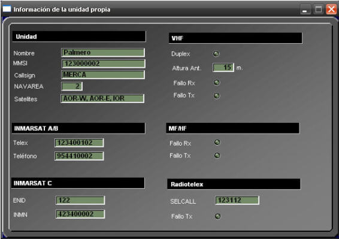

Información de la Unidad
La ventana Información de la Unidad Propia muestra una recopilación del estado y de la información (fundamentalmente identificadores) correspondiente a los diferentes equipos de la unidad. Puede abrirse pulsando el botón INFO que se encuentra en la barra de menú de la Pantalla de Control de Equipos.

La información presentada en la ventana incluye:
- Datos de la unidad: Nombre, MMSI, Callsig y Answerback de la unidad. Se presenta también la NAVAREA en la que se encuentra la unidad y los satélites Inmarsat a los que puede conectarse.
- Números asignados a sus terminales Inmarsat: INMN y número telefónico para Inmarsat A o B y INMN y ENID para Inmarsat C.
- Indicadores de fallo (transmisión y recepción) para los radioteléfonos VHF y MF/HF. Para el radioteléfono VHF se presenta también el indicador de Duplex y la altura a la que está instalada su antena (afecta al alcance de las comunicaciones VHF).
- Número del terminal NBDP e indicador de fallo.